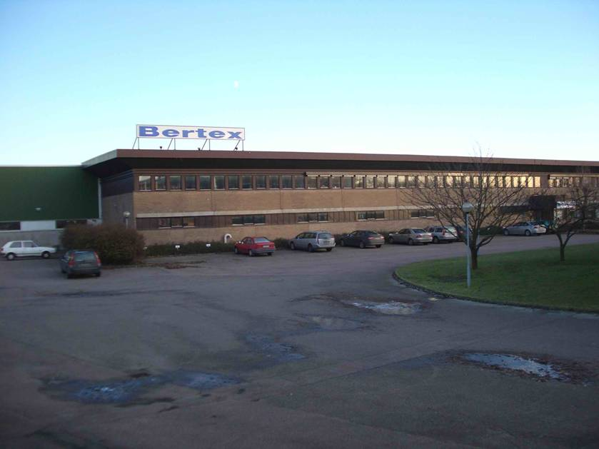

Vad är Bertex?
Bertex startade 1985 och är idag ett av Nordens ledande företag inom förädling och distribution.
Produktions- och lageryta uppgår till ca 4.500 kvm.
Bertex har ca 35 anställda.
Placeringsort är Helsingborg med alla dess goda kommunikationer både i Sverige och Europa.
I dagsläget postinlämnar vi trycksaker om ca 60 miljoner adresserade försändelser varje år.
Varje dag levereras 3 – 4 fullastade trailers post till Citymail och Posten.
